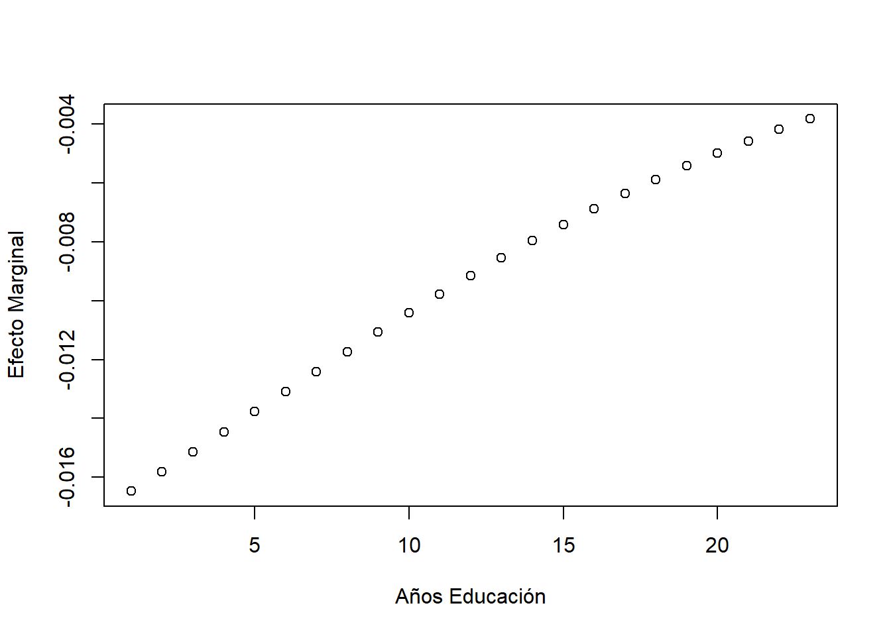

5 Capítulo 5
Apéndices del Libro Pobreza y Desigualdad en R
Last Update: 02/7/2021
Códigos escritos en base a los apéndices del libro “Pobreza y Desigualdad en América Latina” de Gasparini, Cicowiez y Sosa Escudero. El objeto de este material es reproducir la rutina de códigos para STATA presentada en el libro al lenguaje R. Este material es solo de caracter complementario a las explicaciones y detalles conceptuales que se presentan en el libro de texto y los apéndices
Set Inicial
Cargo las librerias, limpio enviroment, defino el path y atajo para funcion paste
library(dplyr)
library(tidyverse) # Data wrangling
library(tidygraph)
library(readxl)
library(ggplot2)
library(foreign)
library(TAM)
library(margins)
rm(list=ls()) #empiezo limpiando todo
"%+%" <- function(x,y) paste(x,y,sep = "") # defino un shorcut parar concat de texto
data_dir <- "C:/Users/HP/Desktop/CEDLAS - UNLP/Apendices en R/Material libro/encuestas-cedlas/Encuestas/" #seteo directorio
5.1 Pobreza Multidimensional
###- (pág. 334-335)
En este primer apartado se muestra cómo puede replicarse el cuadro 5.1 del libro, sobre tasas de pobreza multidimensional en Nicaragua, Perú y Uruguay. Comenzamos cargando y defiendo la base a utilizar
nic05 <- read.dta(data_dir %+% "Nic/2005/bases/nic05_cedlas.dta")
df <- nic05Nos asegurarnos de convertir los missings que puede contener la variable pondera a 0. De esta manera al calcular estimadores ponderados los valores para estas observaciones no tienen ningun peso y evitamos que los missings afecten el nuestros cálculos.
df$pondera <- ifelse(is.na(df$pondera), 0, df$pondera)El bloque de código siguiente asigna a todos los miembros del hogar las variables que solo están definidas para el jefe de hogar. Como se trata de variables relacionadas con las características de la vivienda, típicamente se encuentran en las bases de datos de hogares y no de personas.
En STATA la solución se propone con un bucle. En este caso aplicamos la misma lógica pero nos valemos de la función across que nos permite realizar un mismo cálculo para un conjunto de columnas especificadas. Previamente debemos ordenar y agrupar las observaciones por id.
df <- df %>% arrange(id) %>% group_by(id) %>%
mutate(
across(
.cols = c(habita, matpreca, agua, banio), #sobre qué columnas aplicar operación
.fns = mean, #que operación/función queremos realizar
na.rm = TRUE,
.names = "{col}" #como deben llamarse las nuevas variables
)
)La expresión names = "{col}" indica que el nombre de las nuevas columnas sea el nombre de las variables orginales, por lo que las estamos sobreescribiendo.
En las siguiente bloque de código calculamos los indicadores de pobreza para cada una de las dimensiones relevantes, creando un nueva variable en el data frame para cada caso. Empleamos el comando ifelse cuando el cálculo es directo y mutate cuando se requiere de una variable auxiliar previa.
# (1) ipcf < 2.5 USD
df$indic1 <- ifelse(df$ipcf < 564.12, 1 ,0)
# (2) mas de 3 miembros por cuarto
df <- df %>% mutate(
rat_miembros_cuartos = miembros/habita,
aux = case_when(
(rat_miembros_cuartos>3 & !is.na(rat_miembros_cuartos)) ~ 1,
(rat_miembros_cuartos<=3 & !is.na(rat_miembros_cuartos)) ~ 0)) %>%
group_by(id) %>% mutate(indic2=max(aux)) %>% select(-aux)
# (3) vivienda construida con material precario
df$indic3 <- ifelse(df$matpreca==1, 1 ,0)
# (4) vivienda sin acceso a agua potable
df$indic4 <- ifelse(df$agua==0, 1 ,0)
# (5) vivienda sin acceso a baño sanitario
df$indic5 <- ifelse(df$banio==0, 1 ,0)
# (6) educación promedio menor a 7 años solo para el jefe y conyuge
df <- df %>% mutate(aedu_avg = ifelse(jefe==1 | conyuge==1, mean(aedu, na.rm=TRUE), NA),
aux = ifelse(aedu_avg<7 & jefe==1, 1 ,0)) %>% group_by(id) %>%
mutate(indic6 = max(aux)) %>% select(-aux)Seguidamente obtenemos el porcentaje de personas con privaciones para cada indicador, utilizando la media ponderada.
weighted.mean(df$indic1, df$pondera, na.rm=TRUE)*100## [1] 42.66527weighted.mean(df$indic2, df$pondera, na.rm=TRUE)*100## [1] 35.15812weighted.mean(df$indic3, df$pondera, na.rm=TRUE)*100## [1] 14.43805weighted.mean(df$indic4, df$pondera, na.rm=TRUE)*100## [1] 37.31393weighted.mean(df$indic5, df$pondera, na.rm=TRUE)*100## [1] 73.09805weighted.mean(df$indic6, df$pondera, na.rm=TRUE)*100## [1] 73.3585La variable “npriv” contiene el número de privaciones de cada individuo. Para crearla utilizamos una operación a nivel de fila con el comando rowSums que, combinado con across, nos permite sumar todas las columnas especificadas. En este caso especificamos todas las columnas que comienzan con el patron “indic.” Notese que a diferencia del uso anterior aqui no se realiza una misma operación repetida para cada columna sino que se especifican las columnas que se incluyen como argumento de la operación suma.
#contar condiciones:por fila sumo todas las columnas que comienzan con indic
df <- df %>% mutate(npriv = rowSums(across(starts_with("indic")))) Una forma alternativa más intuitiva sería especificar manualmente las columnas a sumar, pero se vuelve poco efeciente en el caso de que estas sean numerosas, por lo que la posibilidad de identificar columnas por patrones se vuelve particularmente atractiva.
#manera alternativa
df$npriv = df$indic1 + df$indic2 + df$indic3 + df$indic4 + df$indic5 + df$indic6 A partir de la variable “npriv” se generan las variables “pobre1” a “pobre6” que valen 1 de acuerdo con la cantidad de privaciones que sufre cada individuo. Por ejemplo, la variable “pobre4” vale 1 para los individuos que tienen 4 o más privaciones, y 0 en caso contrario.
En cada iteración se concatena el prefijo pobre con el contador i, dandole nombre a cada nueva columna del data frame. Luego se calcula el porcentaje como la media ponderada de esta columna, se redondea e imprime el resultado.
#condición de pobreza segun cantidad de privaciones
for (i in 1:6){
df[paste("pobre",i,sep="")] <- ifelse(df$npriv>=i, 1, 0)
p = weighted.mean(df[paste("pobre",i,sep="")], df["pondera"], na.rm=TRUE)*100
print(paste(i, " privaciones = ", round(p, d=2), "%", sep = ""))
}## [1] "1 privaciones = 86.75%"
## [1] "2 privaciones = 73.02%"
## [1] "3 privaciones = 56.6%"
## [1] "4 privaciones = 37.67%"
## [1] "5 privaciones = 19.2%"
## [1] "6 privaciones = 4.51%"
5.2 Indice Bourguignon y Chakravarty (BC) - Pobreza Multidimensional
###- (pág. 335-336)
El código a continuación permite reproducir el cuadro 5.2 del texto sobre pobreza multidimensional computada con el índice de Bourguignon y Chakravarty (BC). El cómputo de dicho índice se realiza empleando solo las observaciones que tienen información para las tres dimensiones consideradas en el texto; por lo que se eliminan las observaciones con missing en al menos una de esas dimensiones. Se eligen los valores para los parametros relevantes y se fija el número de dimensiones a considerar
df <- df %>% filter(!is.na(ipcf), !is.na(aedu_avg), !is.na(rat_miembros_cuartos))
theta=1
alpha=2
dim_t=3 #total dimensionesPosteriormente almacenamos los valores de las observacion en una lista, donde cada elemento contiene todos los valores de cada una de las 3 variables a considerar. En vectores separados almacenamos los umbrales y los pesos
dimension <- list( df$ipcf, # (1) ipcf
1/df$rat_miembros_cuartos, # (2) ratio de miembros por cuarto
df$aedu_avg # (3) educación promedio de jefe y conyuge
)
umbral <- c(564.119195, 1/3, 7) #valores para los umbrales de cada dimensiones
wt <- c(1, 1, 1) #wt correspondienteEl objeto brechas se define como vacío y cada uno de sus elementos se genera en las iteraciones sucesivas del bucle al comparar cada valor de la variable contra los umbrales fijados. El objeto “suma_brechas” se crea como un vector único con valores 0, y luego se reemplaza iterativamente para computar la suma de brechas. El bucle itera n veces en total, siendo n la cantidad de dimensiones relevadas. En cada iteracion replica la formula de BC para cada dimensión.
#defino la lista brechas como vacia para generar cada uno de sus elementos en el bucle
brecha <- list()
suma_brechas <- c(rep(0, nrow(df)))
for (i in 1:dim_t) {
#generar brechas a partir de valores de las dimensiones vs umbrales
brecha[[i]] <- ifelse(dimension[[i]]<umbral[i], 1-dimension[[i]]/umbral[i], 0)
#construir brechas ponderadas
brecha[[i]] <- wt[i]/dim_t * (brecha[[i]]^theta)
#computar suma de las brechas. Suma_brechas será = 0 solo si todas las brechas son 0
suma_brechas = suma_brechas + brecha[[i]]
}Finalmente se calcula, para cada individuo, la suma de las brechas ponderadas elevadas a la potencia theta, siempre que la suma de las brechas sea distinta de cero. Por último, se computa el índice BC como el cociente entre la suma ponderada de las brechas individuales almacenadas en la variable suma_brechas y la población de referencia.
suma_brechas = ifelse(suma_brechas!=0, suma_brechas^(alpha/theta), suma_brechas)
BC = round(sum(suma_brechas*df$pondera)/sum(df$pondera), d=3)
print(paste("BC =", BC))## [1] "BC = 0.08"
5.3 Indice Alkire y Foster (AF) - Pobreza Multidimensional
###- (pág. 337-338)
A continuación se replica la formula de Alkire y Foster que permite replicar el cuadro 5.3 del texto. Las primeras lineas son identicas al caso anterior, cambiando los parametros de interés y agregando la lista “pobre” como objeto vacío.
k=2
alpha=2
dim_t=3
dim <- list( df$ipcf,
1/df$rat_miembros_cuartos,
df$aedu_avg
)
umbral <- c(564.119195, 1/3, 7)
wt <- c(1, 1, 1)
#defino la lista "brechas" Y pobre como vacia para generar cada uno de sus elementos en el bucle
brecha <- list()
pobre <- list()Nuevamente el bucle itera sobre las n dimensiones fijada generando los valores de brecha para cada observación y ahora también completando el objeto binario “pobre” según el valor que toma la brecha. Al finalizar el bucle se construye el objeto “npriv” que contiene el número de dimensiones en que cada individuo fue identificado como pobre (vale cero para los individuos no pobres). El objeto “pobre_k” vale 1 para los individuos que son pobres en, al menos, k dimensiones.
for (i in 1:dim_t) {
#generar brechas a partir de valores de las dimensiones vs umbrales
brecha[[i]] <- ifelse(dim[[i]]<umbral[i], (1-dim[[i]]/umbral[i])^alpha, 0)
#identificar si es pobre en dimensión i
pobre[[i]] <- ifelse(brecha[[i]]!=0, 1, 0)
}
#identificar pobres en al menos k dimensiones
npriv = pobre[[1]] + pobre[[2]] + pobre[[3]]
pobre_k = ifelse(npriv>=k, 1, 0)La línea siguiente genera la variable “suma_brechas” que, como antes, se emplea luego para almacenar la suma de las brechas en cada una de las dimensiones consideradas. El bucle constuye para cada dimensión los objetos necesarios para replicar la formula de AK
for (i in 1:dim_t) {
#brechas positivas solo si el número de privaciones mayor a k
brecha[[i]] <- ifelse(pobre_k!=1, 0, brecha[[i]])
#construir brechas ponderadas
brecha[[i]] <- wt[i] * brecha[[i]]
#computar suma de las brechas. Suma_brechas será = 0 solo si todas las brechas son 0
suma_brechas = suma_brechas + brecha[[i]]
}Por último se computa y se redondean los valores del índice de AF
AK = round(sum(suma_brechas*df$pondera)/(dim_t*sum(df$pondera)), d=5)
print(paste("AK =", AK))## [1] "AK = 0.12319"
5.4 Perfiles de Pobreza
###- (pág. 338-339)
El bloque de código a continuación puede emplearse para computar el perfil de pobreza monetaria para vivienda y servicios que se muestra en el cuadro 5.8. El código del ejemplo se aplica a la EPH (Encuesta Permanente de Hogares) de Paraguay para el año 2007. Luego de cargar y definir la base, la tercer linea de código genera la variable “hh” que vale 1 para una única observación de cada hogar, a partir de indentificar las observaciones duplicadas. El comando duplicated asigna valor FALSE a la primera observación del por hogar, y TRUE a todo el resto.
pry07 <- read.dta(data_dir %+% "Par/2007/bases/par07_cedlas.dta")
df <- pry07
df$hh <- ifelse(duplicated(df$id)==FALSE, 1,0)Luego generamos en el data frame la variable indicativa de pobreza monetaria y a partir de ella computamos para el grupo de pobres y no pobres, el promedio de las variables “habita,” “matpreca,” “agua,” “banio” y “elect,” indicado la proporción de personas que cuenta con estos servicios.
df$pobre <- ifelse(df$ipcf<205970.366, 1, 0)
df %>% filter(hh==1 & !is.na(pobre)) %>% group_by(pobre) %>%
summarise( mean_habita = weighted.mean(habita, pondera, na.rm = TRUE),
mean_matpreca = weighted.mean(matpreca,pondera, na.rm = TRUE),
mean_banio = weighted.mean(banio, pondera, na.rm = TRUE),
mean_agua = weighted.mean(agua, pondera, na.rm = TRUE),
mean_elect = weighted.mean(elect, pondera, na.rm = TRUE))## # A tibble: 2 x 6
## pobre mean_habita mean_matpreca mean_banio mean_agua mean_elect
## <dbl> <dbl> <dbl> <dbl> <dbl> <dbl>
## 1 0 3.36 0.0108 0.761 0.975 0.978
## 2 1 2.53 0.0414 0.364 0.905 0.898Con el comando ttest buscamos evaluar la significatividad estadística de estas diferencias de medias entre pobres y no pobres para las variables incluidas. Para esto elegimos el nivel de confianza y definimos un bucle que itera sobre cada variable respectiva del data frame. Dentro de él construimos un objeto “x” que contiene los valores para estas variables sólo para una única observación por hogar y para el grupo de pobres y otro objeto “y” con los mismos datos para el grupo de no pobres. A partir de estos objetos se evaluan las significatividad de la diferencia de medias entre ambos grupos y se reporta si su p-valor es mayor al nivel de confianza fijado.
set_confidence = 95
confidence = 1 - set_confidence/100
dim <- c("habita", "matpreca", "banio", "agua", "elect")
for (i in dim){
print(i)
x <- df[df$pobre==1 & df$hh==1, colnames(df)==i]
y <- df[df$pobre==0 & df$hh==1, colnames(df)==i]
test = t.test(x,y)
print(paste("No significative mean diff:", test$p.value > confidence))
}## [1] "habita"
## [1] "No significative mean diff: FALSE"
## [1] "matpreca"
## [1] "No significative mean diff: FALSE"
## [1] "banio"
## [1] "No significative mean diff: FALSE"
## [1] "agua"
## [1] "No significative mean diff: FALSE"
## [1] "elect"
## [1] "No significative mean diff: FALSE"
5.5 Perfiles de Pobreza Condicionados
###- (pág. 340-341)
El bloque de código siguiente permite replicar el cuadro 5.12, que muestra perfiles condicionados de pobreza. En el ejemplo se emplea la encuesta de México para el año 2006. Luego de cargar la base eliminamos las observaciones incohrentes y al igual que antes generamos la variable indicativa de pobreza monetaria línea de 2.5 dólares. Las lineas siguientes agregan nuevas variables al data frame que suman la cantidad de individuos que pertenecen a distintos grupos etarios dentro de cada hogar, calculan el ratio de miembros por habitaciones y los valores de educación y edad al cuadrado
#cargo base
mex06 <- read.dta(data_dir %+% "Mex/2006/bases/mex06_cedlas.dta")
df <- mex06
df <- df %>% filter(cohh==1)
df$pobre <- ifelse(df$ipcf<608.24533, 1, 0)
#número de miembros en cada grupo
df <- df %>% arrange(id) %>% group_by(id) %>%
mutate( miembros_edad_0015 = sum(ifelse(edad<=15, 1, 0)),
miembros_edad_1625 = sum(ifelse(edad %in% (16:25), 1, 0)),
miembros_edad_2640 = sum(ifelse(edad %in% (26:40), 1, 0)),
miembros_edad_4160 = sum(ifelse(edad %in% (41:64), 1, 0)),
miembros_edad_65mas= sum(ifelse(edad>=65, 1, 0)),
rat_miembros_cuartos = miembros/habita,
aedu2=aedu^2,
edad2=edad^2 )Las líneas siguientes contienen la sentencia que estima, para los jefes de hogar, el modelo probit para la probabilidad de ser pobre. Para ello empleamos el comando glm en el cual definimos la variable independiente y todo el conjunto de regresores, indicamos el data frame referido y la familia de modelos que buscamos estimar. Esta estimación la guardamos en el objeto “probit” que luego visualizamos con un summary
Para computar los efectos marginales para el rango 0 a 22 años de educación del jefe de hogar, empleamos el comando margins. Para ello indicamos donde almacenamos nuestra estimación (objeto probit), para qué variables deseamos calcular los efectos (aedu) y sobre qué valores evaluarlos (0:22).
store <- summary(margins(probit, variables = "aedu", at = list(aedu = 0:22)))
store## factor aedu AME SE z p lower upper
## aedu 0.0000 -0.0165 0.0029 -5.6272 0.0000 -0.0222 -0.0107
## aedu 1.0000 -0.0158 0.0028 -5.7352 0.0000 -0.0212 -0.0104
## aedu 2.0000 -0.0151 0.0026 -5.8741 0.0000 -0.0202 -0.0101
## aedu 3.0000 -0.0145 0.0024 -6.0478 0.0000 -0.0191 -0.0098
## aedu 4.0000 -0.0138 0.0022 -6.2616 0.0000 -0.0181 -0.0095
## aedu 5.0000 -0.0131 0.0020 -6.5223 0.0000 -0.0170 -0.0092
## aedu 6.0000 -0.0124 0.0018 -6.8395 0.0000 -0.0160 -0.0088
## aedu 7.0000 -0.0117 0.0016 -7.2263 0.0000 -0.0149 -0.0085
## aedu 8.0000 -0.0111 0.0014 -7.7006 0.0000 -0.0139 -0.0082
## aedu 9.0000 -0.0104 0.0013 -8.2882 0.0000 -0.0129 -0.0079
## aedu 10.0000 -0.0098 0.0011 -9.0270 0.0000 -0.0119 -0.0076
## aedu 11.0000 -0.0091 0.0009 -9.9743 0.0000 -0.0109 -0.0074
## aedu 12.0000 -0.0085 0.0008 -11.2219 0.0000 -0.0100 -0.0071
## aedu 13.0000 -0.0080 0.0006 -12.9242 0.0000 -0.0092 -0.0068
## aedu 14.0000 -0.0074 0.0005 -15.3614 0.0000 -0.0084 -0.0065
## aedu 15.0000 -0.0069 0.0004 -19.0911 0.0000 -0.0076 -0.0062
## aedu 16.0000 -0.0064 0.0003 -25.3519 0.0000 -0.0069 -0.0059
## aedu 17.0000 -0.0059 0.0002 -37.0835 0.0000 -0.0062 -0.0056
## aedu 18.0000 -0.0054 0.0001 -56.6339 0.0000 -0.0056 -0.0052
## aedu 19.0000 -0.0050 0.0001 -52.3155 0.0000 -0.0052 -0.0048
## aedu 20.0000 -0.0046 0.0001 -32.5281 0.0000 -0.0048 -0.0043
## aedu 21.0000 -0.0042 0.0002 -21.7719 0.0000 -0.0046 -0.0038
## aedu 22.0000 -0.0038 0.0002 -15.9736 0.0000 -0.0043 -0.0034Esta información la guardamos en un objeto llamado “store,” del cual nos interesa recuperar el valor de los coficientes almacenados bajo el nombre AME (Average Mean Effect). Con ellos generamos un vector “y” que denota los efectos para cada valor de años de educación, los cuale guardamos en el vector “x.” Finalmente graficamos la relación.
y = store$AME
x = seq(0:22)
plot(x, y,
ylab = "Efecto Marginal",
xlab = "Años Educación")
Una forma más directa de graficar los efectos marginales es a partir del comando cplot de la familia margins, que estima automaticamente estos mismos valores a partir de la estimación del modelo probit
#cplot(probit, "aedu", what = "effect", main = "Average Marginal Effect of Weight")